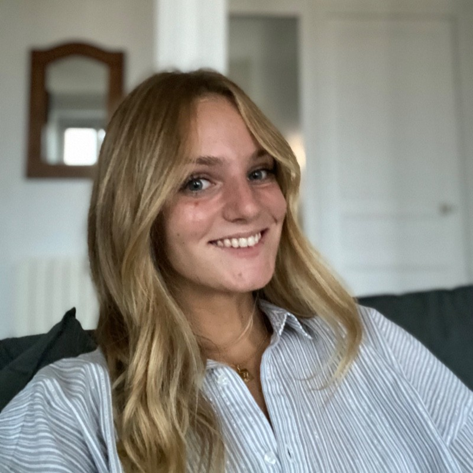

Creating has always been a natural way for me to express ideas ; whether through personal development podcasts, promotional videos or content that inspires growth and builds genuine connections with my community. Sport is another space where I challenge myself. Through demanding competitions like Hyrox and trail running, I’ve learned to push beyond limits and embrace both effort and progress. At the same time, art gives me a different kind of freedom ; drawing, painting and creating allow me to slow down, explore my imagination and express myself in a more intuitive way.
Discover my profileI’m passionate about creating : from producing personal development podcasts to crafting promotional videos and content that inspire, share ideas and strengthen connections with my community.
I have a strong passion for sport, particularly competitions like Hyrox and trail running, where I enjoy pushing my limits and challenging myself.
I have a deep love for art : whether it’s creating, drawing, or painting, it’s a space where I can express myself freely and explore my creativity.